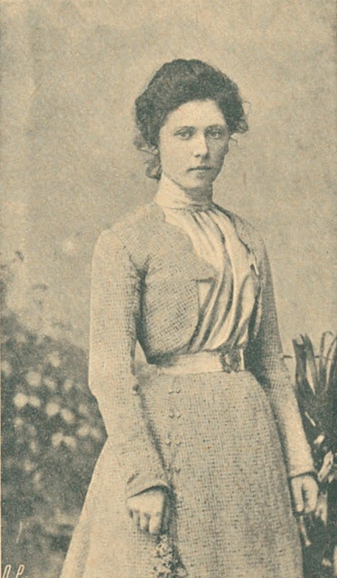

Вся информация взята из "Википедия Свободная энциклопедия"
Макарова Антонина Макаровна

Cоветская военная преступница, палач Локотского округа во время Великой Отечественной войны, расстрелявшая на службе у немецких оккупационных властей и русских коллаборационистов около 1500 человек, в основном советских партизан и мирных жителей. В момент совершения расстрелов была также известна как Тонька-пулемётчица. В дальнейшем вышла замуж и работала контролёром в швейном цехе, однако в конце 1970-х была разоблачена и приговорена к смертной казни. Стала одной из трёх женщин, расстрелянных в СССР в послесталинскую эпоху.|Подробнее|
Яковлева Варвара Николаевна

В 1937 году была арестована как «соучастница подпольного центра, который готовил профашистский путч в Москве с целью государственного переворота, смены общественного строя и расчленения СССР в интересах Германии, Польши и Японии». Яковлева вовлекла в заговор А. С. Бубнова, А. З. Каменского, Н. В. Крыленко, В. Н. Манцева и др. На Третьем московском процессе выступала свидетелем обвинения против Николая Бухарина. В 1938 году потенциальная расстрельная статья для Яковлевой заменена на 20 лет тюремного заключения за искреннее раскаяние и дачу правдивых показаний. Тем не менее, 8 сентября 1941 года заочно приговорена ВКВС СССР к расстрелу (по постановлению ГКО СССР от 6 сентября, подписанному И. В. Сталиным). Расстреляна как изменник родины вместе с другими заключёнными центральной тюрьмы города Орла 11 сентября 1941 года.|Подробнее|
Спиридонова Мария Александровна
16 января 1906 года на вокзале Борисоглебска смертельно ранила гражданского чиновника VI класса — советника тамбовского губернатора Г. Н. Луженовского, выпустив в него пять пуль. Советник отличился в подавлении революционных выступлений во время Революции 1905 года; Спиридонова сама вызвалась осуществить убийство. Она выслеживала Луженовского на станциях и поездах несколько дней, пока не предоставился случай убить его. После убийства Луженовского она пыталась застрелиться, но не успела, подбежавший казак оглушил её ударом приклада. Спиридонова была зверски избита, врач, осматривавший её в тюрьме, засвидетельствовал многочисленные повреждения. 12 марта 1906 года выездная сессия Московского военного окружного суда приговорила Спиридонову к смертной казни через повешение. Шестнадцать дней она провела в ожидании казни, как позже писала Спиридонова, такие моменты навсегда меняют человека. Мария боялась, что не сможет достойно встретить смерть, она сделала человечка из хлебного мякиша и, подвесив его на волоске, часами раскачивала. 28 марта ей сообщили о замене смертной казни бессрочной каторгой, которую она отбывала на Нерчинской каторге.
В 1937 году была снова арестована в Уфе. Военная коллегия Верховного суда СССР признаёт её виновной к 25 годам тюремного заключения. Отбывала срок в Ярославской и Орловской тюрьмах и 11 сентября 1941 года расстреляна сотрудниками НКВД в Медведевском лесу под Орлом вместе с другими 153 политическими заключёнными.|Подробнее|
Иванютина Тамара Антоновна

17 и 18 марта 1987 года сразу несколько учеников и работников школы № 16 Минского района Киева оказались в больнице с признаками пищевого отравления. По фактам отравлений и смертей было возбуждено уголовное дело и создана следственная группа. Следствие, допросив оставшихся в живых потерпевших, установило, что все они начали чувствовать недомогание после того, как в день накануне (16 марта 1987 года) пообедали гречневой кашей и печёнкой в школьной столовой. После этого были проведены обыски у всех лиц, имевших отношение к школьному пищеблоку, в том числе и в доме Тамары Иванютиной, работавшей посудомойкой в столовой школы. При обыске в доме Иванютиной была обнаружена «небольшая, но очень тяжёлая баночка». Лабораторное исследование показало, что в ней находится так называемая жидкость Клеричи — высокотоксичный раствор на основе таллия, применяющийся в некоторых отраслях геологии. Иванютина была арестована и призналась в совершении отравления в школьной столовой. Тамара Иванютина была приговорена к исключительной мере наказания — смертной казни посредством расстрела.|Подробнее|